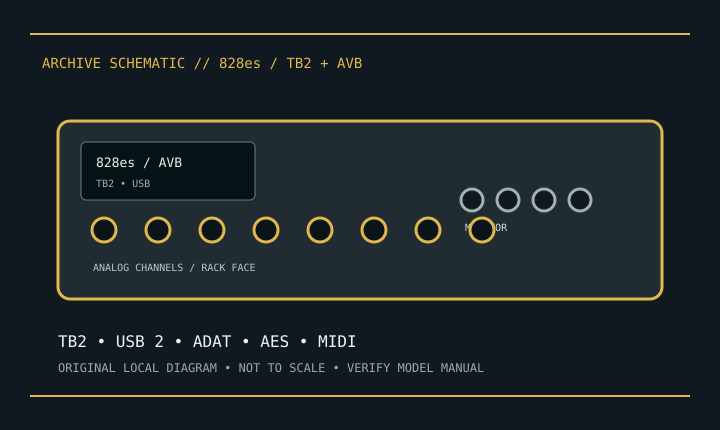

[ INDIVIDUAL COMPONENT // SOUND HARDWARE ]
MOTU 828es
MOTU 828es is a rack interface with Thunderbolt 2, USB 2.0, AVB networking, and onboard routing. Older-generation Thunderbolt needs host/adapter verification.

Model-specific specifications
| Product | MOTU 828es; distinct from 828x, 828mk3, and newer 828. |
|---|---|
| Host | Thunderbolt 2 and USB 2.0; AVB Ethernet provides network audio/control, not Thunderbolt. |
| Analog | Two mic/line combo inputs, eight balanced line outputs, two headphone outputs and monitor connections per manual. |
| Digital | ADAT/TOSLink, coaxial S/PDIF and AES/EBU I/O. 28-in/32-out total depends on rate, optical mode, and routing. |
| Conversion | 24-bit conversion up to 192 kHz; digital channel capacity changes by format/rate. |
| Preamps/MIDI | Two mic preamps with switchable 48 V and 5-pin DIN MIDI I/O. Observe phantom precautions. |
| Software | MOTU drivers/firmware are OS-version specific. Verify current macOS/Windows support and Thunderbolt host chain. |
Compatibility & preservation
Keep original supply, Thunderbolt 2 cable, AVB/network settings and routing preset. A connector adapter alone cannot ensure Thunderbolt compatibility. Save firmware and optical-mode/clock notes before migrating.
- Photograph the model/revision label, connector panel, and installed/bundled accessories before service.
- Retain manufacturer manuals, original driver/firmware packages, and known-working configuration notes with the hardware.
- Use the specified signal level, connector wiring, and power requirements; connector fit alone does not prove compatibility.
Manufacturer sources
- MOTU — 828esManufacturer manual index; select the 828es user guide for connectivity, AVB, I/O and routing details.
- MOTU — technical documentationManufacturer guide/firmware/driver archive; choose 828es.